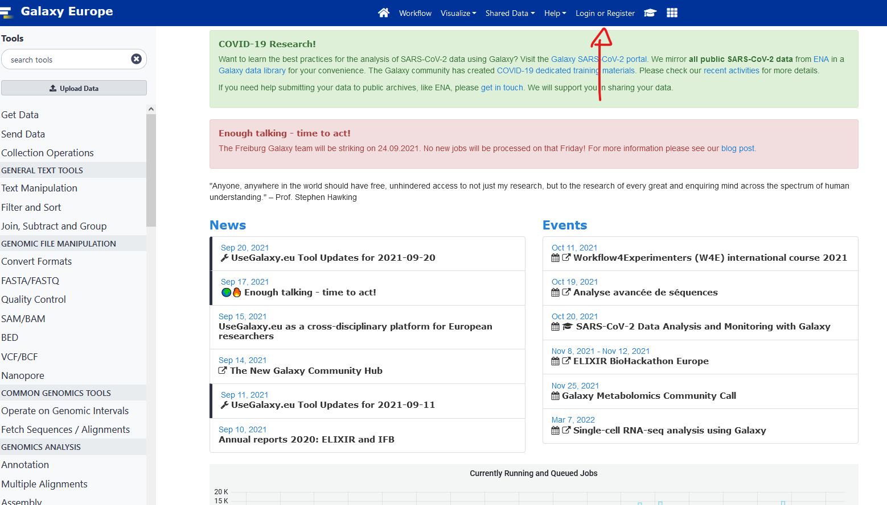

Metagenomics
Introduction
https://usegalaxy.eu/join-training/heh-mag2024
- Introduction to Galaxy here
- Introduction to Metagenomics and environmental studies Slides 1 Slides 2
- The global presentation
- Muffin A nextflow Genomic Workflow Slides
Additional Introductions:
- Link to all Galaxy Metagenomics courses
- Analyses of metagenomics data - The global picture 2,5-3h by Galaxy
- Ancient DNA and metagenomics Slides
Shotgun metagenomics (assembly free)
Assembly-free method, Practical 4h
Galaxy alternative
Identification of the micro-organisms in a beer using Nanopore sequencing 1-1,5h
Shotgun metagenomics (with assembly)
Assembly and binning method, Practical 4h
Galaxy alternative
Assembly of metagenomic sequencing data 2-3h
Amplicon sequencing
16S Microbial Analysis with mothur (short) 2-3h
alternatives
Galaxy: 16S Microbial analysis with Nanopore data 2-3h
Local: DADA2
Metatranscriptomics
Metatranscriptomics analysis using microbiome RNA-seq data (short) 3-4h
Grade breakdown
- 40% Active participation
- 20% Project report
- 40% Pre-Project presentation and discussion
Project
instructions:
Find a tool, pipeline, or analysis method of metagenomics that has not been seen during the course and test and evaluate it. You must explain how it works, how you found it, and its use in metagenomics studies. You can compare it to a similar tool/method seen during the course.
You are tasked to have a report of at least two pages (not counting graphics, pictures, and tables). Additional points will be provided if your work is easily reproducible (scripts, command list, and workflows provided in addition to the report).
Project Grade breakdown
- 10% originality
- 20% Reasoning and Explanation of what it should do
- 30% execution and testing
- 20% analysis of the results
- 20% comparison to existing methods
Presentation Plan
You will present your individual project and a summary of the course.
15 minutes of group presentation where you summarise the principles and methods of metagenomics.
15 minutes of individual presentation where you expose your work:
-
Methods selected and Why
-
Results
-
Discussion (comparison with a method seen during the course)
Bibliography and ressources
Core Papers:
-
https://www.microbiologyresearch.org/content/journal/mgen/10.1099/mgen.0.000409
-
https://www.nature.com/articles/nbt.3935/figures/1
-
https://www.sciencedirect.com/topics/biochemistry-genetics-and-molecular-biology/metagenomics
Additional read:
-
https://www.nature.com/articles/nbt.3935
-
https://www.nature.com/articles/srep01968
-
https://www.frontiersin.org/articles/10.3389/fmicb.2021.613791/full
-
https://academic.oup.com/bib/article/22/6/bbab330/6358409
-
https://academic.oup.com/bib/article/21/2/584/5363831
-
https://www.nature.com/articles/s42003-021-02510-6
-
https://bmcbioinformatics.biomedcentral.com/articles/10.1186/s12859-020-03667-3
Tools:
-
MUFFIN: https://github.com/RVanDamme/MUFFIN & https://journals.plos.org/ploscompbiol/article?id=10.1371/journal.pcbi.1008716
-
metaWRAP: https://github.com/bxlab/metaWRAP & https://microbiomejournal.biomedcentral.com/articles/10.1186/s40168-018-0541-1
-
Flye: https://github.com/fenderglass/Flye & https://www.nature.com/articles/s41592-020-00971-x
-
Kraken2: https://github.com/DerrickWood/kraken2 & https://genomebiology.biomedcentral.com/articles/10.1186/s13059-019-1891-0
Galaxy
Galaxy set up
- Register to usegalaxy.eu.


-
Click the verification link you will receive by email.
-
Go to this https://usegalaxy.eu/join-training//heh-mag2024 to join our training session. It should say you successfully registered in heh-meta-omic
Galaxy introduction
Slides here
We will follow this tutorial
Bioconda and Conda installation
We will follow the installation recommended by bioconda directly
Installation of bioconda
- Install conda
Bioconda requires the conda package manager to be installed. If you have an Anaconda Python installation, you already have it. Otherwise, the best way to install it is with the Miniconda package. The Python 3 version is recommended.
On MacOS, run:
curl -O https://repo.anaconda.com/miniconda/Miniconda3-latest-MacOSX-x86_64.sh
sh Miniconda3-latest-MacOSX-x86_64.sh
On Linux, run:
curl -O https://repo.anaconda.com/miniconda/Miniconda3-latest-Linux-x86_64.sh
sh Miniconda3-latest-Linux-x86_64.sh
Follow the instructions in the installer. If you encounter problems, refer to the Miniconda documentation.
- Set up channels
After installing conda, you will need to add the bioconda channel as well as the other channels bioconda depends on. It is important to add them in this order to set the priority correctly (that is, conda-forge is the highest priority).
The conda-forge channel contains many general-purpose packages not already found in the default channel.
conda config --add channels defaults
conda config --add channels bioconda
conda config --add channels conda-forge
- Install packages
Browse the packages to see what’s available.
Bioconda is now enabled, so any packages on the bioconda channel can be installed into the current conda environment:
conda install bwa
Or a new environment can be created:
conda create -n aligners bwa bowtie hisat star
!!!! if you are on Ubuntu in WSL, you might get an HTTP error. To solve it, a simple reboot of your computer is enough.!!!!
Conda Tutorial, guides, and CheatSheet
Here is a collection of materials to train and improve your conda use. All have their strength and weaknesses, the cheatsheet is your best friend when working.